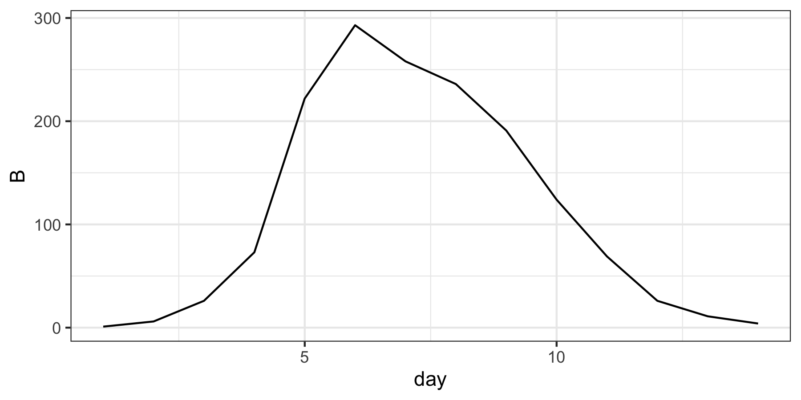

Bayesian statistics and pomp
Lecture outline
- Motivating Bayesian statistics
- Short introduction to Bayesian statistics and theory
- Introduction to MCMC
- Introduction to PMCMC
- Simple influenza case study
What we have covered so far
\[p(y|\theta)\]
- \(y\) can be thought of as your data or observations
- \(\theta\) can be thought of as the model or parameter values
- Called the “Likelihood”
Issues with maximum likelihood estimation (MLE)
- Assumes results occur with some given “frequency” over period time or replicates/repeated experiments
- If we had the same outbreak hundreds of time, what proportion of them would provide confidence intervals that contain the true value for the \(R_0\)
- Some difficulties in constraining parameter values based on outside data, information, or expert opinion
- Just not really intuitive…
- We typically want to say something about the parameters based on the data, \(p(\theta|y)\)
Bayesian statistics
- Bayes theorem provides an intuitive framework to update parameter estimates based on both prior knowledge and experimental data
- End result is a posterior distribution, \(p(\theta|y)\), directly describing the parameter and model of interest
- Easy to communicate results
- “The reproduction number is estimated to be x, with a 95% credible interval from y to z”
- Issues
- Computationally expensive
- Without enough data, prior can bias posterior distribution, but this is what you want!
Bayes theorem 1
\[p(\theta|y) = \frac{p(y|\theta)p(\theta)}{p(y)}\]
- \(p(\theta|y)\) is the posterior distribution
- \(p(y|\theta)\) is the likelihood
- \(p(\theta)\) is the prior distribution
- \(p(y)\) is the marginal distribution (sometimes called a normalizing constant as it doesn’t depend on the parameters)
Bayes theorem 2
\[p(\theta|y) = \frac{p(y|\theta)p(\theta)}{p(y)}\]
- \(p(y) = \int p(y|\theta) p(\theta) d\theta\)
- Probability of observing \(y\) marginal over all possible values of \(\theta\)
- Typically is very difficult to calculate
- The good news is that \(p(y)\) is a constant
Bayes theorem 3
\[p(\theta|y) \propto p(y|\theta)p(\theta)\]
- Since \(p(y)\) is a constant, the posterior distribution is proportional to the likelihood times the prior
- If we can solve this we can get the posterior distribution because \(\int p(\theta|y)d\theta = 1\)
- Intuitively our parameter estimates are based on a combination of our observations \(p(y|\theta)\) and our prior beliefs \(p(\theta)\)
- Only need to sample from the likelihood and prior distribution to get the posterior
How do we do so?
- Many ways to do so (and many software packages), but we’re only going to talk about one…
- Markov chain Monte Carlo (MCMC) is a class of algorithms used to draw samples from a probability distribution
- Will not cover the theoretical details, but will attempt to motivate
Assume you have an unknown probability distribution (hill) to explore… How would you do so?
- You don’t know where it is in parameter space
- You don’t know it’s shape
MCMC Robot Rules
MCMC Robot Rules (actual)
MCMC Demonstration (https://plewis.github.io/applets/mcmc-robot/)
Steps for Metropolis-Hastings MCMC
- Choose a reasonable starting place for parameters (\(\theta\))
- Propose new parameter values (\(\theta'\))
- Calculate the proposal probability \(\alpha\)
- Accept (change parameters to \(\theta'\)) or reject (keep parameters at \(\theta\)) with probability \(\alpha\)
- Repeat steps 2-5 for as many MCMC iterations as desired
Steps for Metropolis-Hastings MCMC
- Choose a reasonable starting place for parameters (\(\theta\))
- Propose new parameter values (\(\theta'\))
- Calculate the proposal probability \(\alpha\)
- Accept (change parameters to \(\theta'\)) or reject (keep parameters at \(\theta\))
- Repeat steps 2-5 for as many MCMC iterations as desired
Where \[\alpha = \text{min}(1, \rho)\] and \[\rho = \frac{p(\theta'|y)}{p(\theta|y)} \cdot \frac{G(\theta|\theta')}{G(\theta'|\theta)}\]
\(\rho\) equals the ratio of posterior distributions multiplied by the proposal probability ratio
\[\rho = \frac{p(\theta'|y)}{p(\theta|y)} \cdot \frac{G(\theta|\theta')}{G(\theta'|\theta)}\]
- For symmetric proposal distributions (random walks) \(\frac{G(\theta|\theta')}{G(\theta'|\theta)} = 1\)
- Notice that the posterior denominators from before (\(p(y)\)) cancel each other out in this ratio
We can simplify the acceptance probability significantly
\[\rho = \frac{p(y|\theta')p(\theta')}{p(y|\theta)p(\theta)}\]
- Only depends on the likelihood and prior probabilities
Prior parameter distributions
- Prior distributions assign probabilities to specific parameter values and are created separately for every parameter
- Other than strict constraints, we expect the data and likelihood to drive the posterior distribution, but always good idea to check the impact the prior distributions have in a sensitivity analysis
Three main types of prior distributions
- Informative priors craft a distribution based on previous scientific studies
- Typically only used if a specific quantity is well known from outside data (e.g. the infection fatality rate or infectious period)
- Weakly informative priors craft a distribution with reasonable constraints
- Used for regularization (e.g. to “suggest” that a parameter is most likely to be positive)
- Uninformative (flat priors) assign equal probabilities across a range of plausible values
- Can constrain parameters to be strictly positive or in biologically/epidemiologically relevant range
- Not always “uninformative”
Questions about MCMC?
PMCMC
\[p(y|\theta)p(\theta)\]
- Standard MCMC algorithm assumes a deterministic likelihood
- When process stochasticisty is included we use the particle filter to obtain likelihood
- Particle filter (Sequential Monte Carlo procedure) approximates \(p(y|\theta)\), but with variability
- Can complicate things a bit, but usually not an issue
Further PMCMC resources
- For an awesome field-specific explanation
- For some considerations with modeling and inference
- For an example of how it has been used in recent epidemiological literature
- For working with pmcmc in the
pomppackage
Considerations for moving from mif2 to pmcmc in pomp
- Specify the prior distributions for all parameters
- Use the
pmcmc()function - Use MCMC diagnostics to check convergence, etc.
Influenza boarding school example
- 1978 influenza epidemic in boarding school that infected much of the school
- Data are actually kids in beds, but we are assuming it’s new infections
Modeling as an SIR model with reporting of new infections
Modeling as an SIR model with reporting of new infections
rproc <- Csnippet("
double N = 2000;
double t1 = rbinom(S,1-exp(-Beta*I/N*dt));
double t2 = rbinom(I,1-exp(-mu_I*dt));
S -= t1;
I += t1 - t2;
NI += t1;
R += t2;
")
rmeas <- Csnippet("
B = rpois(rho*NI+1e-6);
")Specifying the prior distribution
priorDens <- Csnippet("
lik = dunif(Beta, 1, 4, 1) +
dunif(mu_I, 0.5, 3, 1) +
dunif(rho, 0.5, 1, 1);
if (!give_log) lik = exp(lik);
")- Add the densities (probabilities) for each parameter value independently
- Include the same log functionality used before
- We are specifying a plausible range of values for each parameter here
Running an MCMC chain
flu |> ## Standard pomp object that has already been created
pomp(dprior = priorDens, ## Prior specified from previous slide
params = sim_params, ## Parameter starting point
paramnames=c("Beta","mu_I","rho")) |> ## Parameter names
pmcmc(Nmcmc = 10000, ## Number of MCMC iterations
Np = 200, ## Number of particles to use
proposal = mvn_diag_rw(rw.sd = c(Beta=0.3, mu_I=0.3, rho=0.1))
) -> test_mcmcProposal distributions in pomp
mvn_diag_rw(rw.sd)- you provide the standard deviations for the proposals for each parametermvn_rw(rw.var)- you provide the variance/covariance matrix for proposalsmvn_rw_adaptive()- you provide either of the above and it attempts to automatically “tune” parameters to achieve good MCMC mixing
Typically you need to test different values initially
flu |> ## Standard pomp object that has already been created
pomp(dprior = priorDens, ## Prior specified from previous slide
params = sim_params, ## Parameter starting point
paramnames=c("Beta","mu_I","rho")) |> ## Parameter names
pmcmc(Nmcmc = 10000, ## Number of MCMC iterations
Np = 200, ## Number of particles to use
proposal = mvn_diag_rw(rw.sd = c(Beta=0.3, mu_I=0.3, rho=0.1))
) -> test_mcmcDiagnosing chain mixing
Diagnosing chain mixing - autocorrelation
library(coda)
test_mcmc |>
traces() |>
autocorr.diag(lags=c(10, 50, 100)) loglik log.prior Beta mu_I rho
Lag 10 0.8603731 0.9990001 0.8845398 0.8810328 0.8023407
Lag 50 0.5396487 0.9950005 0.5445343 0.5645781 0.3971658
Lag 100 0.3494610 0.9900010 0.3271410 0.3358897 0.2386606
mu_R1
Lag 10 0.9990001
Lag 50 0.9950005
Lag 100 0.9900010Second step often uses the empirical covariance matrix for proposals to improve mixing
flu |>
pomp(dprior = priorDens,
params = sim_params, ##Using the sim params as a starting spot
paramnames=c("Beta","mu_I","rho")) |>
pmcmc(Nmcmc = 10000,
Np = 200,
proposal = mvn_rw(covmat(test_mcmc, thin = 50))
) -> test_mcmc2Improved trace plots!
Improved autocorrelation!
test_mcmc2 |>
traces() |>
autocorr.diag(lags=c(10, 50, 100)) loglik log.prior Beta mu_I
Lag 10 0.37014612 0.9990001 0.309750841 0.32244825
Lag 50 0.02823492 0.9950005 -0.057939058 -0.03009082
Lag 100 0.01502889 0.9900010 -0.005065156 -0.02058864
rho mu_R1
Lag 10 0.30978973 0.9990001
Lag 50 -0.01285783 0.9950005
Lag 100 -0.02784212 0.9900010Estimating posterior distributions
- Once you are happy with the mixing of your
pmcmcyou are ready to do a run for estimating posteriors - First randomly choose 3-5 starting parameter values (example uses Latin-hypercube sampling)
- Run (in parallel or not depending on computational time) a chain intialized with each
- Diagnose chain mixing with trace plots and Gelman-Rubin convergence diagnostic
- Remove the burn-in period and thin based on diagnostics
- Summarize parameter posterior distributions and credible intervals
Summary process for PMCMC in pomp
- Create
pompobject exactly as normal - Create the prior distributions for parameters
- Run an initial
pmcmcwithmvn_diag_rwproposal to make sure it’s working and diagnose - Randomly sample 3-5 parameter starting conditions
- Run a PMCMC chain with
mvn_rw()proposal and the variance/covariance matrix from the first run for each of the initial parameter combinations - Diagnose mixing and convergence (alter components as needed)
- Summarize parameters
Activity: how do stochastic and deterministic models differ?
- Go to https://plewis.github.io/applets/mcmc-robot/, and play with different MCMC parameters and variations
- Download the exercise code for the influenza boarding school example and test the impact of the following on mixing and traceplots:
- Different parameters for the proposal distribution
- Different starting parameter values
- Different number of particles
License, acknowledgments, and links
This lesson is prepared for the Simulation-based Inference for Epidemiological Dynamics module at the Summer Institute in Statistics and Modeling in Infectious Diseases, SISMID.
The materials build on previous versions of this course and related courses.
Licensed under the Creative Commons Attribution-NonCommercial license. Please share and remix non-commercially, mentioning its origin.
Produced with R version 4.3.2 and pomp version 5.10.
Compiled on 2024-07-24.